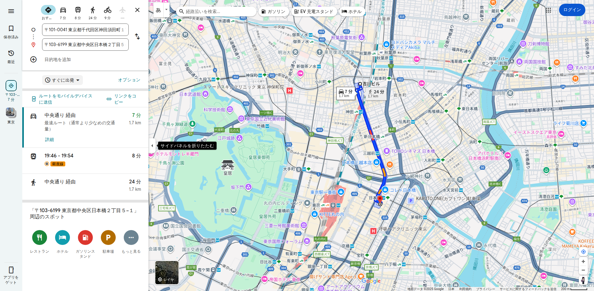
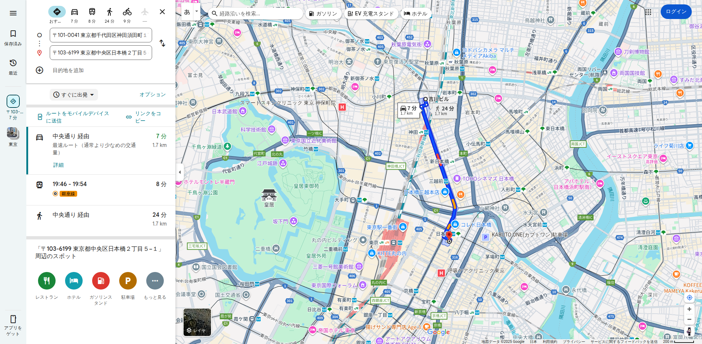
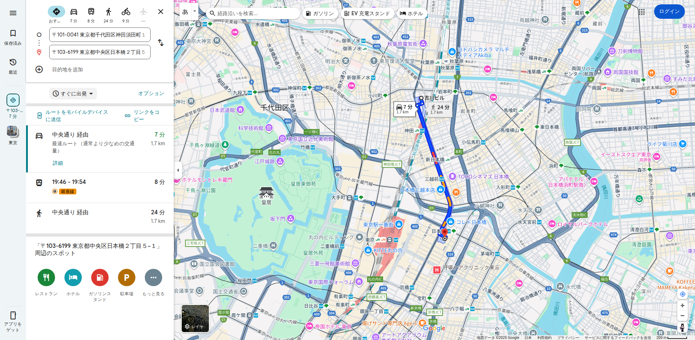

🔍 Google Maps スクレイピング デバッグキャプチャ
実行時刻: 2025-08-15 10:45:27
1. 基本URL（時刻指定なし）
URL: https://www.google.com/maps/dir/%E6%9D%B1%E4%BA%AC%E9%83%BD%E5%8D%83%E4%BB%A3%E7%94%B0%E5%8C%BA%E7%A5%9E%E7%94%B0%E9%A0%88%E7%94%B0%E7%94%BA1-20-1/%E6%9D%B1%E4%BA%AC%E9%83%BD%E4%B8%AD%E5%A4%AE%E5%8C%BA%E6%97%A5%E6%9C%AC%E6%A9%8B%EF%BC%92%E4%B8%81%E7%9B%AE%EF%BC%95%E2%88%92%EF%BC%91
読み込み時間: 2.9秒
公共交通機関ボタン: 0個
時刻表示要素: 1個
ルート数: 3個
スクリーンショット:

HTMLファイルを表示
2. 公共交通機関モード
URL: https://www.google.com/maps/dir/%E6%9D%B1%E4%BA%AC%E9%83%BD%E5%8D%83%E4%BB%A3%E7%94%B0%E5%8C%BA%E7%A5%9E%E7%94%B0%E9%A0%88%E7%94%B0%E7%94%BA1-20-1/%E6%9D%B1%E4%BA%AC%E9%83%BD%E4%B8%AD%E5%A4%AE%E5%8C%BA%E6%97%A5%E6%9C%AC%E6%A9%8B%EF%BC%92%E4%B8%81%E7%9B%AE%EF%BC%95%E2%88%92%EF%BC%91/data=!3e3
読み込み時間: 3.6秒
公共交通機関ボタン: 0個
時刻表示要素: 1個
ルート数: 3個
スクリーンショット:

HTMLファイルを表示
3. 時刻指定付き
URL: https://www.google.com/maps/dir/%E6%9D%B1%E4%BA%AC%E9%83%BD%E5%8D%83%E4%BB%A3%E7%94%B0%E5%8C%BA%E7%A5%9E%E7%94%B0%E9%A0%88%E7%94%B0%E7%94%BA1-20-1/%E6%9D%B1%E4%BA%AC%E9%83%BD%E4%B8%AD%E5%A4%AE%E5%8C%BA%E6%97%A5%E6%9C%AC%E6%A9%8B%EF%BC%92%E4%B8%81%E7%9B%AE%EF%BC%95%E2%88%92%EF%BC%91/data=!4m18!4m17!1m5!2m2!1d139.768563!2d35.6949994!1m5!2m2!1d139.7712416!2d35.6811282!2m3!6e1!7e2!8j1755306000!3e3
読み込み時間: 1.5秒
公共交通機関ボタン: 0個
時刻表示要素: 1個
ルート数: 3個
スクリーンショット:

HTMLファイルを表示